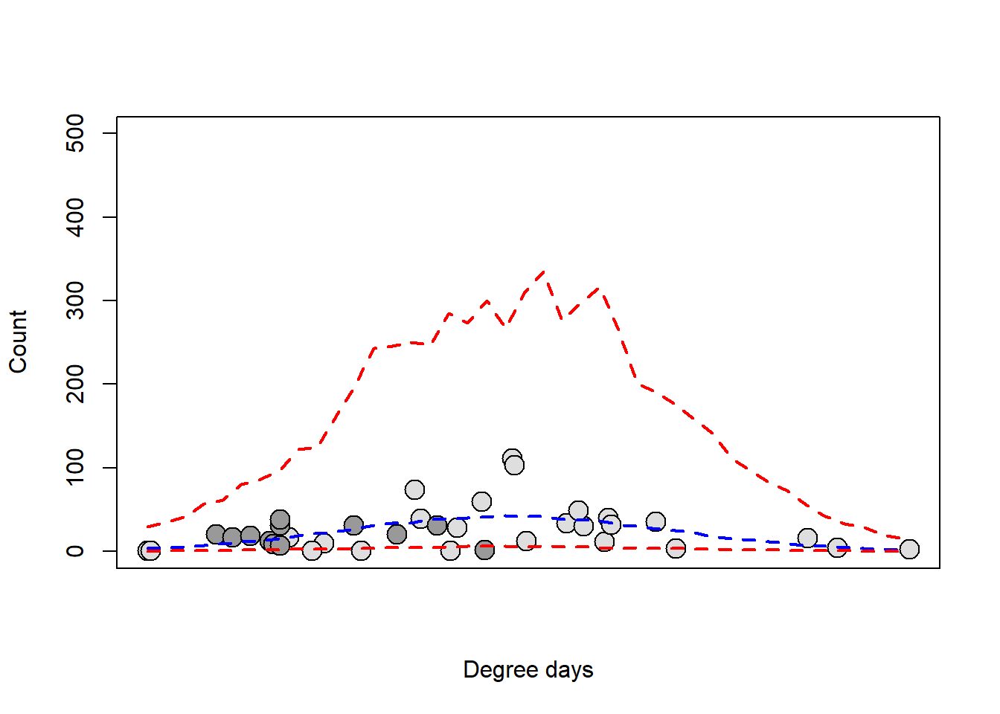
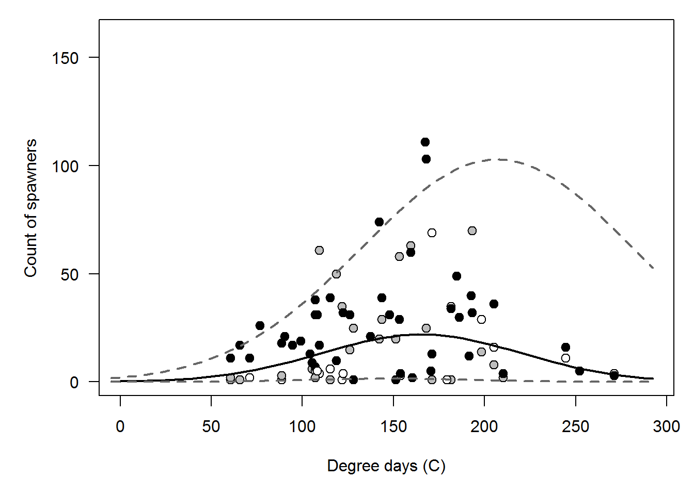
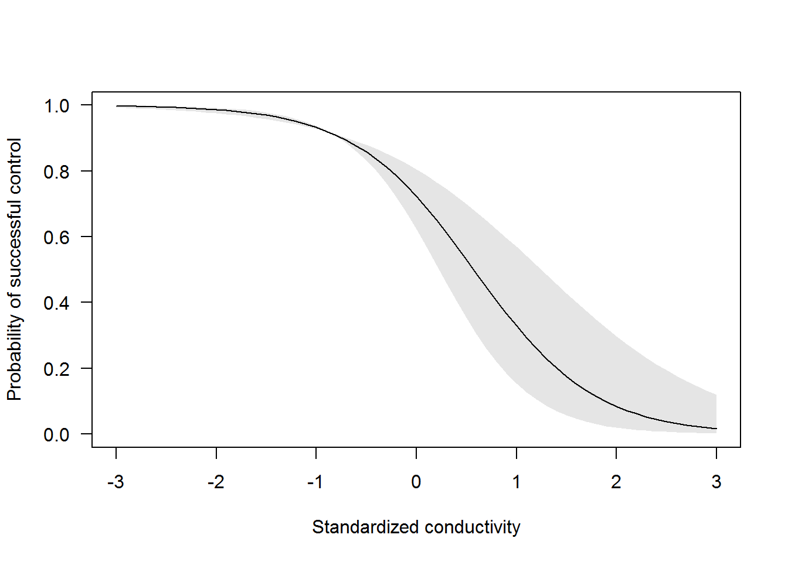
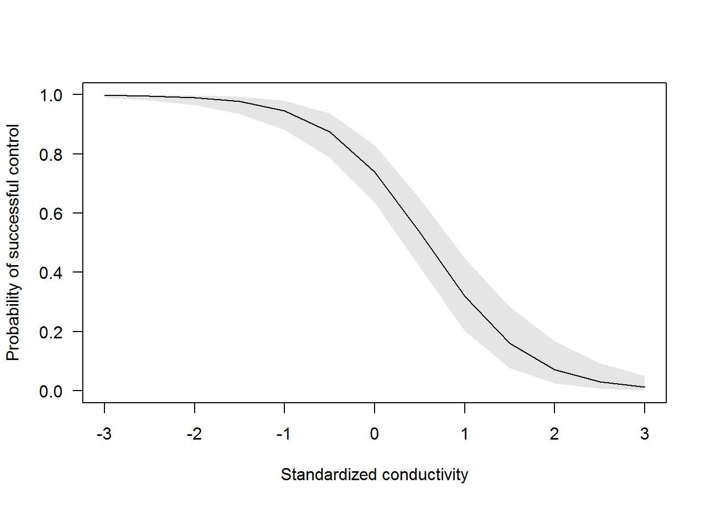

Generalized linear mixed models (GLMM)

Introduction
This week in lecture, we introduced the generalized linear mixed model (GLMM). As we have discussed, the GLMM is to the linear mixed model as the GLM is to the general linear model (ANOVA, linear regression, ANCOVA, etc.). That is to say, the GLMM is just an LMM that assumes some error distribution other than normal. This week in lab, we will practice running GLMMs using restricted maximum likelihood estimation (REML) in the lme4 package in R, and using Bayesian estimation in JAGS through the R2jags package in R. We will play with a couple of different data sets this week, and give you the choice of which to pursue further.
Choose your own data adventure
This week we will work with two different data examples to demonstrate a couple different applications of GLMM to non-normal data. The binomial and Poisson distributions are commonly used to describe biological and ecological processes due to the nature of the data we collect. Therefore, one of the examples this week will use a Bernouli response (special case of the binomial where N = 1), and the other will use a count response to demonstrate the application of GLMMs in biology and ecology. Please realize that procedures outlined below are generally applicable within the broader context of GLMM, and they are easily generalized to include a wide variety of other sampling distributions not discussed in class.
For our assignments this week, you may choose to work with either one of these examples, and must only submit a write-up for one of them. You choose, although I encourage you to explore with both of them to investigate similarities and differences in how things work for the models.
Walleye phenology
Walleye phenology
It is that magical time of year again. Birds are returning from their winter vacations, and all of the critters are twitterpaited. The salamanders and frogs are making there way to breeding pools in the soaked leaf litter, and even the fish are warming up for the spawn. There’s only one problem: we don’t quite know when those fish are going to get into the streams so we can catch them, clip their fins, put some tags in them, and study their every move (…muwahaha…). While the timing of daffodil emergence is often a reliable indicator, it would be nice to have a simple regression we could use to predict the timing of the fish spawn and maximize field sampling efficiency.
For this first example, we will attempt to predict counts of walleye, Sander vitreus, in spawning streams of Otsego Lake based on historical counts and climate data.
Walleye data
We begin by reading in the data set:
# Read in the walleye data
wae = read.csv('classData-master/otsegoRunCounts.csv', stringsAsFactors = FALSE)Have a look at the first ten lines of the data set:
head(wae, 10)
date site Length..mm. Weight..gm. Sex Stage Count
1 4/10/2017 Shadow Brook 0 NA Male Ripe 1
2 4/12/2017 Hayden Creek 0 NA Male Ripe 1
3 4/17/2009 Cripple Creek 340 NA Male Ripe 1
4 4/17/2009 Cripple Creek 353 NA Male Ripe 1
5 4/5/2009 Hayden Creek 354 NA Male Ripe 1
6 4/20/2009 Shadow Brook 360 NA Male Spent 1
7 4/12/2009 Shadow Brook 364 NA Male Ripe 1
8 4/16/2009 Cripple Creek 365 NA Male Ripe 1
9 4/18/2009 Shadow Brook 366 NA Male Ripe 1
10 4/16/2009 Cripple Creek 369 NA Male Ripe 1And check out the data structure
str(wae)
'data.frame': 1879 obs. of 7 variables:
$ date : chr "4/10/2017" "4/12/2017" "4/17/2009" "4/17/2009" ...
$ site : chr "Shadow Brook" "Hayden Creek" "Cripple Creek" "Cripple Creek" ...
$ Length..mm.: int 0 0 340 353 354 360 364 365 366 369 ...
$ Weight..gm.: num NA NA NA NA NA NA NA NA NA NA ...
$ Sex : chr "Male" "Male" "Male" "Male" ...
$ Stage : chr "Ripe" "Ripe" "Ripe" "Ripe" ...
$ Count : int 1 1 1 1 1 1 1 1 1 1 ...These data are measurements of the length and mass of individual walleye at various reproductive stages that were captured in spawning tributaries of Otsego Lake during the 2009 and 2013 spawning season. o
We will use the data to predict number of walleye we expect to see each day in the spawning tribs during spring 2017 based on historical counts.
Climate Data
For this example, we are interested in predicting the timing of the walleye run. Generally speaking, phenology of spawning events in fishes and many other animals is driven by circannual rhythms entrained by photoperiod. However, temperature often acts as a trigger for releasing behavior related to spawning…Translation: if we want to predict timing of the spawning run, we need to have data for photoperiod and temperature, too!
I collected some of this information ahead of time for you. Temperature, precipitation, and snow depth data were downloaded from the following, surely reliable, website.
Read in the data an have a look at the structure
# Read in the climate data
climate=read.csv('classData-master/tempdata.csv', stringsAsFactors = FALSE)
# Have a look at the data structure
str(climate)
'data.frame': 693 obs. of 3 variables:
$ date : chr "1/1/2009" "1/2/2009" "1/3/2009" "1/4/2009" ...
$ high_f: num 19.9 17.1 28 28 33.1 32 35.1 34 30 21.9 ...
$ low_f : num 0 3 12.9 12.9 10.9 12 12 27 12.9 0 ...# Have a look at the data structure
str(climate)
'data.frame': 693 obs. of 3 variables:
$ date : chr "1/1/2009" "1/2/2009" "1/3/2009" "1/4/2009" ...
$ high_f: num 19.9 17.1 28 28 33.1 32 35.1 34 30 21.9 ...
$ low_f : num 0 3 12.9 12.9 10.9 12 12 27 12.9 0 ...Data management
Walleye counts
Okay, so now we have fish records by date and we have some climate data for those same dates and then some. Now, we need to smash all of those data together so we can use them.
Our first step will be to summarize the walleye counts by date. To do this, we will use the plyr package in R.
# Load the package
library(plyr)Tally up total counts of walleye in each stream on each day.
# Make a column of ones that we can sum
weye = ddply(wae, c('date', 'site'), summarize, counts = length(Sex))Climate data
Next, we will get the climate data in order.
Because temperature fluctuates pretty widely in the spring, we often think of accumulated thermal units (ATU) or degree days as having more of an influence on the reproductive biology of many organisms rather than just absolute temperatures. You can think of degree days as the sum of all temperatures from some starting date until some ending date. In our case, we will add up the degree days from January 1 until date i in our dataframe to get degree days for each observation.
First, we will convert our temperatures to celcius like the rest of the world.
# Convert from farenheit to celcius
climate$high_c = (climate$high_f-32)*5/9
climate$low_c = (climate$low_f-32)*5/9Next, we will calculate degree days (in \(^{\circ}\)C) using both the high temp and the low temp. We will start by calculating the mean of highs and lows, and then add them up for the time period of interest. Ideally, we would be working with averages, but this will do for now.
# Calculate mean based on daily highs and lows
climate$mean_c = apply(climate[ , 4:5], 1, mean)
# Exclude values less than zero from this calculation
climate$ddPrep = climate$mean_c
climate$ddPrep[climate$ddPrep < 0] = 0
# Change date to a date object from factor
# Load lubridate package
library(lubridate)
# Convert to date
climate$date = as.Date(as.character(climate$date),
format="%m/%d/%Y")
# Get ordinal date
climate$day = yday(climate$date)
# Get year
climate$year = year(climate$date)
# Sort climate data by date and year
climate = climate[with(climate, order(year, day)), ]
# Add up the values to calculate degree
# days for each year
# Split the dataframe up into a list
# with a df for each year
test = split(climate$ddPrep, climate$year)
# Replace NA values of temperature with
# arithmetic mean of
# preceding and following elements
library(zoo)
test = mapply(na.approx, test)
# Calculate degree days for each year
dd = mapply(cumsum, test)
# Unlist the result and add it to the climate data
climate$dd = unlist(dd)Data merge
We can now add degree days to our fish data. What? Fish data? I forgot we had that!
To wrap up our climate analysis, we will quickly calculate day length at Otsego Lake based on lattitude for each day of our historical records using the geosphere package.
library(geosphere)
climate$daylight = daylength(lat = 42.76, doy = climate$day)Our final job will be to add all of the climate data to our new dataframe containing walleye counts. This is relatively easy to do in R using the merge() function, like so:
# First, format the date column in the weye df
weye$date = as.Date(as.character(weye$date), format="%m/%d/%Y")
# Merge the two dataframes
eyes = merge(weye, climate)
# Finally, we are going to get rid of Leatherstocking
# for now because there are few data points there
eyes = eyes[eyes$site!='Leatherstocking Creek', ]
# Check to see how much data we have left
nrow(eyes)
[1] 84Wow, that’s rough! We went from several hundred lines of data to just a handful pretty quickly!!
Modeling counts
After our data management triathalon, we can finally model walleye counts as a function of some explanatory variables of interest. As has become our practice during the last several lessons, we will do this in both frequentist and Bayesian frameworks.
REML estimation
We start by estimating a model using REML. Let’s say for the sake of argument that we are simply interested in the lake-wide mean of our counts so that we know when students should, for example, be heading out to tributaries to look for walleyes in streams.
For now, we will model walleye count as a function of photoperiod, with a random effect of site on the intercepts. This model assumes that there is variability in counts of spawning individuals between sites, but that the relationship between photoperiod and count is the same across all sites. In this case, we will specify a quadratic relationship between counts and dates because we expect the number of fish to increase to some point in the run before it decreases. We are not interested
In the lme4 package, the model might look something like this:
# Load the package
library(lme4)
# Make the model
waeMod1 = glmer(counts~dd + (dd^2) + (1|site), data=eyes, family=poisson)
# Have a look-see at the results
summary(waeMod1)
Generalized linear mixed model fit by maximum likelihood (Laplace Approximation) ['glmerMod']
Family: poisson ( log )
Formula: counts ~ dd + (dd^2) + (1 | site)
Data: eyes
AIC BIC logLik deviance df.resid
2001.5 2008.8 -997.7 1995.5 81
Scaled residuals:
Min 1Q Median 3Q Max
-5.615 -3.187 -1.223 1.566 15.840
Random effects:
Groups Name Variance Std.Dev.
site (Intercept) 0.1144 0.3382
Number of obs: 84, groups: site, 3
Fixed effects:
Estimate Std. Error z value Pr(>|z|)
(Intercept) 2.5179198 0.2098985 11.996 < 2e-16 ***
dd 0.0028820 0.0004679 6.159 7.31e-10 ***
---
Signif. codes: 0 '***' 0.001 '**' 0.01 '*' 0.05 '.' 0.1 ' ' 1
Correlation of Fixed Effects:
(Intr)
dd -0.338
convergence code: 0
Model is nearly unidentifiable: very large eigenvalue
- Rescale variables?Crap! Our model failed to converge. It looks like this is probably because we have variables on really different scales, and because we have a lot of colinearity between them. So, let’s try standardizing our covariates to see what we can do about that:
# Standardize photoperiod
eyes$sdd = scale(eyes$dd)
# Make the model
waeMod2 = glmer(counts~sdd + I(sdd^2) + (1|site),
data=eyes,
family=negative.binomial(theta=1000))
# Have a look-see at the results
summary(waeMod2)
Generalized linear mixed model fit by maximum likelihood (Laplace Approximation) ['glmerMod']
Family: Negative Binomial(1000) ( log )
Formula: counts ~ sdd + I(sdd^2) + (1 | site)
Data: eyes
AIC BIC logLik deviance df.resid
1680.3 1692.5 -835.2 1670.3 79
Scaled residuals:
Min 1Q Median 3Q Max
-5.8122 -2.6153 -0.8857 1.8710 11.6470
Random effects:
Groups Name Variance Std.Dev.
site (Intercept) 0.07527 0.2743
Number of obs: 84, groups: site, 3
Fixed effects:
Estimate Std. Error z value Pr(>|z|)
(Intercept) 3.26437 0.16230 20.11 <2e-16 ***
sdd 0.34889 0.03256 10.71 <2e-16 ***
I(sdd^2) -0.43186 0.03043 -14.19 <2e-16 ***
---
Signif. codes: 0 '***' 0.001 '**' 0.01 '*' 0.05 '.' 0.1 ' ' 1
Correlation of Fixed Effects:
(Intr) sdd
sdd 0.009
I(sdd^2) -0.111 -0.321Okay, looks like we are doing a lot better with this now.
As we look through these results, we can see that we have a significant effect of degree days on spawning behavior. What’s more is that our count of spawning fish appears to increase during the year to a point before it starts to decrease.
Now, if we want, we can make a graph to show these predictions. Here, we make predictions for all years, and then we plot those predictions for a single site (Shadow Brook).
You will need to install the merTools package for this one before you can run the code below (install.packages(merTolls)). You will have to allow it to build from source.
# Load the merTools package
library(merTools)
# Make a new dataframe for prediction
sdd = seq(from = min(eyes$sdd), to = max(eyes$sdd), by = .1)
site = sort(rep(unique(eyes$site), length(sdd)))
sdd = rep(sdd, length(unique(eyes$site)))
newdata = data.frame(sdd)
# Simulate predictions from the relationship stored in the model fit using
# our new data
PI <- predictInterval(merMod = waeMod2, newdata = newdata,
level = 0.95, n.sims = 1000,
stat = "median", type="linear.prediction",
include.resid.var = TRUE)
PI = apply(PI, c(1, 2), exp)
# Plot the raw data but don't label the x-axis
# because we will want to add unstandardized labels
# even though our regression used standardized labels
plot(eyes$sdd[eyes$site=='Shadow Brook'],
eyes$counts[eyes$site=='Shadow Brook'],
ylim = c(0,500), pch=21,
bg=c('gray87', 'gray60','gray40', 'black')[as.factor(eyes$year)],
cex=1.9, xlab='Degree days', ylab='Count',
xaxt='n'
)
# Add lines to the plot
lines(newdata$sdd[site=='Shadow Brook'],
PI[site=='Shadow Brook',1], lty=2, lwd=2, col='blue') # Mean
lines(newdata$sdd[site=='Shadow Brook'],
PI[site=='Shadow Brook',2], lty=2, lwd=2, col='red') # Lower
lines(newdata$sdd[site=='Shadow Brook'],
PI[site=='Shadow Brook',3], lty=2, lwd=2, col='red') # Upper
We could also do this using our global parameter estimates and some new data. We see that our mean predictions aren’t terrible, but there is quite a bit of uncertainty here.
Bayesian estimation
We can fit the same model in the Bayesian framework, too. Here we specify it just as we have during the past couple of weeks.
Let’s make sure to standardize covariates first:
#eyes = eyes[eyes$year!=2019, ]
eyes$stemp = scale(eyes$mean_c) # Temperature
eyes$stemp[is.na(eyes$stemp)] <- mean(eyes$stemp, na.rm = T)
eyes$sdd = scale(eyes$dd) # Degree days
eyes$sdaylight = scale(eyes$dd) # Daylight/photoperiod
eyes$doy = yday(eyes$date)
eyes$sdoy = scale(eyes$doy)Now write out a model with random intercepts to predict count as a function of some covariate of interest (we’ll start with degree day in the example that follows):
# Write model
modelstring="
model {
# Likelihood
for(i in 1:n){
count[i] ~ dnegbin(p[i], r) # The random variable
p[i] <- r/(r+lambda[i])
log(lambda[i]) <- mu[i]
mu[i] <- alpha[site[i]] + beta*X[i] + beta2*(X[i]^2) # Expectation
}
# Priors
for (i in 1:ngroups){
alpha[i] ~ dnorm(mu.int, tau.int) # Random intercepts
}
mu.int ~ dnorm(0, 0.1) # Mean hyperparameter for random intercepts
tau.int <- 1 / (sigma.int * sigma.int)
sigma.int ~ dunif(0, 100) # SD hyperparameter for random intercepts
beta ~ dnorm(0, taub) # Common slope
taub <- 1 / ( sigmab * sigmab) # Residual precision
sigmab ~ dunif(0, 100) # Residual standard deviation
beta2 ~ dnorm(0, taub2) # Common slope
taub2 <- 1 / ( sigmab2 * sigmab2) # Residual precision
sigmab2 ~ dunif(0, 100) # Residual standard deviation
r ~ dgamma(0.001, 0.001) # Site-specific overdispersion
}
"
# Bundle data
wae.data <- list(count=eyes$count,
site = as.numeric(as.factor(eyes$site)),
X = as.vector(eyes$sdd), # replace covariates here
ngroups = length(unique(eyes$site)),
n = nrow(eyes)
)
# Inits function
inits <- function(){
list(
alpha = rnorm(length(unique(eyes$site)), 0, 1),
r = rgamma(length(unique(eyes$site)), 0.1, 0.01),
beta = rnorm(1, 0, 1),
beta2 = rnorm(1, 0, 10),
mu.int = rnorm(1, 0, 1),
sigma.int = rlnorm(1),
sigmab = rlnorm(1),
sigmab2=rlnorm(1)
)}
# Parameters to estimate
parameters <- c("alpha", "beta", "beta2","mu.int", "sigma.int", "sigmab",
"sigmab2")
# MCMC settings
ni <-5000
nb <- 2500
nt <- 10
nc <- 3
# Load the package
library(R2jags)
# Run the Gibbs sampler
out <-jags(wae.data, inits=NULL, parameters,
model.file = textConnection(modelstring),
n.thin=nt, n.chains=nc, n.burnin=nb, n.iter=ni,
progress.bar = 'text')
Compiling model graph
Resolving undeclared variables
Allocating nodes
Graph information:
Observed stochastic nodes: 84
Unobserved stochastic nodes: 10
Total graph size: 828
Initializing model
# Print the results
print(out, digits=3)
Inference for Bugs model at "5", fit using jags,
3 chains, each with 5000 iterations (first 2500 discarded), n.thin = 10
n.sims = 750 iterations saved
mu.vect sd.vect 2.5% 25% 50% 75% 97.5% Rhat n.eff
alpha[1] 2.897 0.291 2.339 2.697 2.891 3.085 3.484 1.000 750
alpha[2] 3.270 0.186 2.933 3.142 3.268 3.386 3.660 0.999 750
alpha[3] 3.586 0.173 3.247 3.467 3.586 3.703 3.933 1.005 390
beta 0.353 0.118 0.118 0.273 0.355 0.436 0.572 1.000 750
beta2 -0.406 0.091 -0.589 -0.468 -0.406 -0.350 -0.224 0.999 750
mu.int 3.012 0.887 0.429 2.837 3.193 3.446 4.269 1.020 700
sigma.int 1.212 1.484 0.081 0.380 0.683 1.422 5.661 1.000 750
sigmab 18.535 25.175 0.264 1.550 5.996 25.948 88.604 1.000 750
sigmab2 16.451 23.428 0.272 1.331 5.452 21.433 88.353 1.001 750
deviance 671.275 3.511 666.377 668.708 670.648 673.253 679.309 1.000 750
For each parameter, n.eff is a crude measure of effective sample size,
and Rhat is the potential scale reduction factor (at convergence, Rhat=1).
DIC info (using the rule, pD = var(deviance)/2)
pD = 6.2 and DIC = 677.4
DIC is an estimate of expected predictive error (lower deviance is better).We notice that all parameters converge. Note that if we run this without standardizing our degree day covariate, convergence is not quite as clean. This is likely because of correlations between dd and dd2.
One thing you might notice here is the shift in our upper 95% credible interval around the posterior prediction. This is pretty typical of phenology data, and is caused by the fact that we don’t really sample much once we stop catching fish. Something to consider when designing your own studies…
Your mission
If you choose this homework option, I would like you to do the following:
- Re-run the code block above, replacing
sddinwae.datawith each of the other standardized covariates fromeyes(stemp,sdaylight, andsdoy). For each model, I want you to get the DIC and check convergence (do this one first).
- Then, using the best model DIC, please make predictions from the model coefficients. Below is an example using the degree day model above. You can use the predictions about walleye counts vs degree days to find out the approximate date of first spawn by looking up the date that corresponds to minimum degree day where predicted counts > 0 in the climate data (or
temp,daylight,doy).
- Submit a brief writeup describing methods and results.
# Make a new sequence of standardized degree days
sdd = seq(-3, 3, .1)
# Make prediction from the model parameters
fit = exp(
mean(out$BUGSoutput$sims.list$mu.int)+
mean(out$BUGSoutput$sims.list$beta)*sdd+
mean(out$BUGSoutput$sims.list$beta2)*(sdd^2))
lcis = exp(
quantile(out$BUGSoutput$sims.list$mu.int, probs=.025)+
quantile(out$BUGSoutput$sims.list$beta, probs=.025)*sdd+
quantile(out$BUGSoutput$sims.list$beta2, probs=.025)*(sdd^2))
ucis = exp(
quantile(out$BUGSoutput$sims.list$mu.int, probs=.975)+
quantile(out$BUGSoutput$sims.list$beta, probs=.975)*sdd+
quantile(out$BUGSoutput$sims.list$beta2, probs=.975)*(sdd^2))
# Plot the predictions
par(mar=c(5,5,1,1))
plot(eyes$sdd, eyes$counts,
pch=21, bg=c('white', 'gray', 'black')[as.factor(eyes$site)], cex=1.2,
ylim=c(0, max(eyes$counts)+50),
xlim=c(-2.9, 3),
xlab='Degree days (C)',
ylab='Count of spawners',
xaxt='n', yaxt='n')
lines(sdd, fit, lwd=2, lty=1, col='black')
lines(sdd, lcis, lwd=2, lty=2, col='gray40')
lines(sdd, ucis, lwd=2, lty=2, col='gray40')
# Add a new x-axis
axis(side=1,
at=(seq(0,300,50)-mean(eyes$dd))/sd(eyes$dd),
labels=
#Get dd on original scale from a sequence
# of new standardized values
seq(0,300,50)
)
# Add a rotated y-axis
axis(2, las=2)
Plant surveys
Big milfoil problems
For this example, we will look at increases or decreases in Eurasian watermilfoil (Myriophylum spicatum) following herbicide treatment at different doses. We will use a Bernoulli response (1 or 0) to test effects of turbidity on successful achievement of plant control across 30 sites.
Data
Start by reading in the data:
# Read in the plant data
plants = read.csv("classData-master/plants2.csv")This is a pretty straightforward data set compared to the walleye phenology set (hopefully that is not what led you here). Here, we have samples of Eurasian watermilfoil control from each of 30 experimental waterbodies treated with an herbicide at 5 different conductivities. Those data have been condensed to indicate whether the species increased or decreased at each site following herbicide application. Here, we will investigate the influence of conductivity (an index for turbidity where greater values indicate more turbid water) on this response, while accounting for random variation between sites.
Estimation with REML
To start with, we will fit the model using REML. Here, we need to remember to specify a site-specific random effect on the intercept and we need to give R the family for our link function.
# Fit the model and store it to an object
plantMod1=glmer(success~conductivity+(1|site),
data=plants, family=binomial)Crud! The first thing we get smacked with is a warning about predictor (explanatory) variables being on very different scales. This is because the variable we are using (conductivity) varies across a huge range. That causes numerical problems during estimation with the algorithm being used.
Let’s scale and center (standardize) the conductivity variable
# Scale and center the variable
plants$scond <- as.vector(scale(plants$conductivity))
# Fit the model and store it to an object
plantMod1=glmer(success~scond+(1|site),
data=plants, family=binomial)After a quick look at the results, we see that turbidity has a significant, negative effect on the probability of successful control following this herbicide application.
We could make a graph of these results as follows:
# Get the fixed-effects coefficients from the model
f.coefs <- summary(plantMod1)$coefficients
# Make a function to invert the logit
invlogit=function(x){exp(x)/(1+exp(x))}
# Now we can make predictions with a sequence over
# the range of observed values using y = mx + b
newCond = seq(-3, 3, 0.10)
preds = f.coefs[1,1] + f.coefs[2,1]*newCond
# Get upper and lower 95% CI for predictions, too!
lwr = (f.coefs[1,1]-1.96*f.coefs[1,2]) + (f.coefs[2,1]-1.96*f.coefs[2,2])*newCond
upr = (f.coefs[1,1]+1.96*f.coefs[1,2]) + (f.coefs[2,1]+1.96*f.coefs[2,2])*newCond
# Make a quick plot, inverting the logit function for
# predictions on the fly
plot(newCond, invlogit(preds), type='l', lwd=2, col='white',
xlab = 'Standardized conductivity',
ylab = 'Probability of successful control',
yaxt = 'n', ylim = c(0, 1)
)
axis(side=2, las=2)
# Add lower and upper prediction of success by conductivity
# also inverting logit on the fly
polygon(x = c(newCond, rev(newCond)), y = c(invlogit(lwr), rev(invlogit(upr))),
col = rgb(0.8, 0.8, 0.8, 0.5), border = NA
)
lines(newCond, invlogit(preds), lty=1, lwd=1, col='black')
We can see that most of the uncertainty in this relationship occurs at higher conductivity, and the rest of the pattern is much what we would expect based on the value of beta from our model.
If we wanted to make predictions for one or more of the sites, we could do so using the merTools package as demonstrated in the walleye phenology example (check it out for the homework!).
Bayesian estimation
Now, we will estimate a model with random slopes using Bayesian methods.
modelstring="
model{
# Priors
for(i in 1:ngroups){
alpha[i] ~ dnorm(mu.int, tau.int) # Random intercepts
}
mu.int ~ dnorm(0, 0.001) # Mean hyperparameter for ran. intercepts
tau.int <- 1/(sigma.int*sigma.int) # Precision for random intercepts
sigma.int ~ dunif(0, 100) # SD hyperparameter for ran. intercepts
beta ~ dnorm(0, 0.001) # Common slope for beta
# Likelihood
for(i in 1:N){
y[i] ~ dbern(mu[i])
logit(mu[i]) <- alpha[site[i]] + beta*X[i]
}
}
"Make the data
# Package the data in a list for JAGS
jags.data <- list(
y = plants$success,
site = plants$site,
X = plants$scond,
ngroups = length(unique(plants$site)),
N = nrow(plants)
)Define parameters for monitoring
# Specify the parameters we want to monitor
parameters = c("alpha", "beta", "mu.int", "sigma.int")Specify initial values
# Make a function to declare some initial values.
inits = function(){
list(
alpha = rnorm(length(unique(plants$site)), 0, 2),
beta = rnorm(1,1,1),
mu.int = rnorm(1,0,1),
sigma.int = rlnorm(1)
)
}Define MCMC settings for Gibbs sampler
# MCMC settings
ni <- 15000
nt <- 5
nb <- 5000
nc <- 3Run the model
# Load the R2jags package
library(R2jags)
# Call JAGS from R and run the model
plant_glmm <- jags(jags.data, inits, parameters,
model.file = textConnection(modelstring),
n.chains = nc, n.thin = nt, n.iter = ni,
n.burnin = nb)Compiling model graph
Resolving undeclared variables
Allocating nodes
Graph information:
Observed stochastic nodes: 180
Unobserved stochastic nodes: 33
Total graph size: 950
Initializing modelLook at the results
# Print the model
print(plant_glmm, digits=3)
Inference for Bugs model at "6", fit using jags,
3 chains, each with 15000 iterations (first 5000 discarded), n.thin = 5
n.sims = 6000 iterations saved
mu.vect sd.vect 2.5% 25% 50% 75% 97.5% Rhat n.eff
alpha[1] 1.361 0.644 0.328 0.938 1.269 1.692 2.915 1.001 3200
alpha[2] 1.657 0.815 0.539 1.086 1.464 2.083 3.654 1.002 2400
alpha[3] 1.360 0.652 0.332 0.930 1.254 1.684 2.934 1.002 2500
alpha[4] 0.789 0.598 -0.498 0.459 0.839 1.157 1.901 1.002 2200
alpha[5] 1.075 0.580 -0.045 0.722 1.050 1.400 2.325 1.001 6000
alpha[6] 1.080 0.585 -0.062 0.726 1.058 1.398 2.376 1.001 3300
alpha[7] 1.372 0.656 0.325 0.939 1.269 1.711 2.910 1.002 2400
alpha[8] 1.367 0.669 0.286 0.930 1.257 1.698 2.983 1.001 6000
alpha[9] 1.374 0.667 0.323 0.938 1.266 1.701 3.012 1.002 3100
alpha[10] 1.068 0.572 -0.078 0.723 1.056 1.389 2.295 1.001 2900
alpha[11] 0.799 0.591 -0.530 0.475 0.853 1.177 1.861 1.004 670
alpha[12] 0.793 0.590 -0.566 0.469 0.838 1.159 1.855 1.001 5900
alpha[13] 1.371 0.670 0.308 0.937 1.264 1.709 2.963 1.001 3900
alpha[14] 0.797 0.582 -0.513 0.484 0.852 1.155 1.874 1.002 1900
alpha[15] 1.074 0.568 -0.040 0.726 1.045 1.397 2.323 1.002 2600
alpha[16] 0.794 0.594 -0.531 0.457 0.854 1.171 1.881 1.002 1400
alpha[17] 1.075 0.578 -0.044 0.737 1.046 1.392 2.338 1.001 6000
alpha[18] 1.070 0.581 -0.033 0.721 1.042 1.384 2.358 1.001 3500
alpha[19] 0.788 0.589 -0.527 0.469 0.835 1.153 1.886 1.001 3200
alpha[20] 0.790 0.578 -0.522 0.466 0.838 1.164 1.830 1.001 3700
alpha[21] 0.517 0.664 -1.014 0.137 0.615 0.987 1.566 1.002 2700
alpha[22] 1.354 0.650 0.299 0.927 1.253 1.682 2.942 1.001 4200
alpha[23] 1.072 0.572 -0.042 0.740 1.049 1.388 2.371 1.001 6000
alpha[24] 1.080 0.579 -0.057 0.733 1.060 1.397 2.314 1.002 2100
alpha[25] 0.782 0.589 -0.538 0.464 0.842 1.159 1.869 1.001 3000
alpha[26] 0.517 0.676 -1.068 0.141 0.637 0.990 1.544 1.002 2600
alpha[27] 1.085 0.579 -0.059 0.737 1.058 1.414 2.376 1.001 5500
alpha[28] 0.795 0.583 -0.465 0.474 0.838 1.167 1.840 1.002 1800
alpha[29] 1.378 0.654 0.342 0.951 1.266 1.715 2.990 1.002 2300
alpha[30] 0.784 0.587 -0.556 0.450 0.839 1.161 1.836 1.003 960
beta -1.800 0.286 -2.398 -1.985 -1.786 -1.598 -1.283 1.001 6000
mu.int 1.042 0.267 0.556 0.863 1.030 1.214 1.588 1.001 2800
sigma.int 0.587 0.347 0.055 0.316 0.552 0.822 1.355 1.022 200
deviance 160.978 6.463 147.431 156.544 161.574 165.831 172.250 1.003 840
For each parameter, n.eff is a crude measure of effective sample size,
and Rhat is the potential scale reduction factor (at convergence, Rhat=1).
DIC info (using the rule, pD = var(deviance)/2)
pD = 20.8 and DIC = 181.8
DIC is an estimate of expected predictive error (lower deviance is better).This output can be a bit daunting because of the alpha overload. Here, we have a unique alpha for each of our initial 30 sites. We have a single beta describing the change in probability of success as a function of conductivity.
If we just want the overall change in probability of success as related to conductivity, then will want to work with our global mean, mu.int for now. For this homework option, I will ask you to pick one of the sites to make predictions using one of the alpha parameters instead of mu.int.
# Get the posteriors
posts = plant_glmm$BUGSoutput$sims.list
# Have a look at them
names(posts)
[1] "alpha" "beta" "deviance" "mu.int" "sigma.int"Get the regression coefficients:
# Intercept estimates
mu.int <- posts$mu.int
# Slope estimates
beta <- posts$beta Now that we have our coefficient estimates, we can make predictions using our good old friend \(y = mx + b\), or pred = mu.int + beta * scond. We have to step up our coding game a little here to make one prediction for each pair of parameter estimates stored in our posteriors.
We start by making a new sequence of our X variable (conductivity)
# Make up some new values of our
# standardized covariate (conductivity)
newcond = seq(-3, 3, .5)Now, we will make an empty matrix with the same number of rows as our MCMC samples in alpha and mu.int and a number of columns corresponding to the number of elements in newcond.
# Make an empty matrix to hold predictions
preds = matrix(NA, nrow=length(mu.int), ncol=length(newcond))Here comes the tricky part. We are going to loop over the rows and columns in the matrix, pulling new values of alpha and mu.int as well as new values of newcond in a nested, sequential way. Note that alpha and mu.int are indexed by i and newcond is indexed by a t.
for(i in 1:nrow(preds)){
for(t in 1:ncol(preds)){
preds[i,t] <- mu.int[i] + beta[i]*newcond[t]
}
}Now, let’s calculate some summary statistics from the joint posterior prediction. First, we will get the mean and and 95% CRI for probability of success for each new observation of conductivity.
pred.mean <- invlogit(apply(preds, 2, mean))
pred.lwr <- invlogit(apply(preds, 2, quantile, 0.025))
pred.upr <- invlogit(apply(preds, 2, quantile, 0.975))# Make a quick plot, inverting the logit function for
# predictions on the fly
plot(newcond, pred.mean, type='l', lwd=2, col='white',
xlab = 'Standardized conductivity',
ylab = 'Probability of successful control',
yaxt = 'n', ylim = c(0, 1)
)
axis(side=2, las=2)
# Add lower and upper prediction of success by conductivity
# also inverting logit on the fly
polygon(x = c(newcond, rev(newcond)), y = c(pred.lwr, rev(pred.upr)),
col = rgb(0.8, 0.8, 0.8, 0.5), border = NA
)
lines(newcond, pred.mean, lty=1, lwd=1, col='black')
Notice here that the variance around our predictions at high values of standardized conductivity is much better estimated than in our REML fit above.
Your mission
For this option, I want you to do the following:
- Using either REML or Bayesian estimation, first run the model out to convergence. Make sure diagnostics idicate that estimates have converged and effective sample size (ESS, or
n.eff) is sufficiently large if using Bayesian.
- Make predictions for at least one individual site using one set of
alphaestimates from the model. If using REML, you can see an example of how to do this in the walleye phenology homework option.
- Submit a brief writeup describing methods and results.
This work is licensed under a Creative Commons Attribution 4.0 International License. Data are provided for educational purposes only unless otherwise noted.